TRUEGLIDE
TRUEGLIDE Visualiseur Blackbox : Min / Max des courbes
Chaque courbe du visualiseur a son échelle : une valeur Minimum (le bas de son graphe) et une valeur Maximum (le haut). Les régler permet de lire en un coup d'œil un écart de 2 °/s comme un crash à 700 °/s, de superposer le gyroscope et la consigne, ou de centrer le P, I, D et F d'un axe.
Le visualiseur est l'onglet Visualiseur Blackbox du logiciel XPro (groupe Analyse), à partir de la version
0.8.4. Il ouvre le fichier .bin téléchargé dans l'onglet Blackbox, ou lit directement le journal de la
carte branchée en USB. Chaque armement est un vol, choisi dans la liste.


Changer les valeurs
Les échelles actuelles sont dans le dialogue Configurer les courbes, colonnes Minimum et Maximum. On les change de trois façons :
- À la main : taper la valeur dans la case.
- Double-clic sur une case : elle reprend sa valeur par défaut.
- Clic droit sur une case : le menu des échelles, décrit plus bas.
Rien ne change à l'écran avant Appliquer ; Annuler (ou un clic à côté du dialogue) oublie tout.
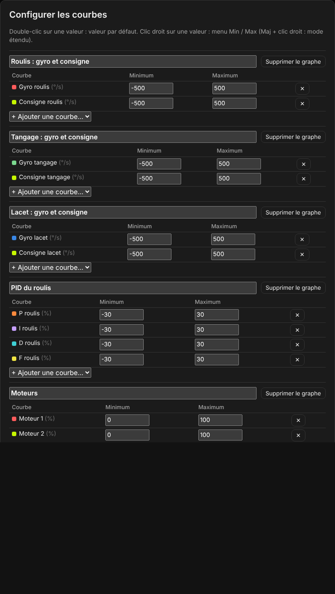
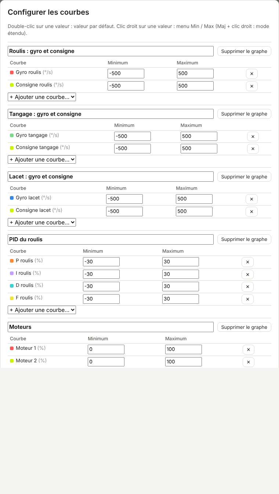
Le menu principal
Clic droit sur la case Minimum ou Maximum de la courbe voulue. Le menu a trois parties :
- Toutes les courbes : les actions qui changent l'échelle de toutes les courbes du dialogue.
- Cette courbe : les mêmes actions pour la seule courbe du clic (ici « Gyro tangage »).
- Le rappel du mode étendu : Maj + clic droit.
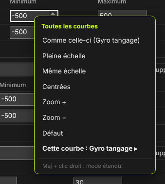
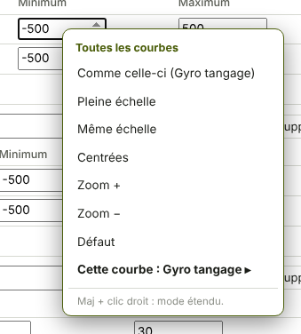
Les actions
| Action | Ce qu'elle fait |
|---|---|
| Comme celle-ci | Donne à toutes les courbes le Minimum et le Maximum de la courbe du clic. |
| Pleine échelle | Règle chaque courbe sur ses propres valeurs les plus basse et la plus haute, sur tout le journal du vol. |
| Même échelle | Met toutes les courbes à une seule échelle : le plus petit Minimum et le plus grand Maximum d'entre elles. |
| Centrées | Centre chaque courbe sur zéro : son échelle devient symétrique, de −M à +M. |
| Zoom +, Zoom − | Resserre ou élargit l'échelle de 15 % autour de son milieu. |
| Défaut | Remet les échelles d'origine (gyroscope et consigne ±500 °/s, P I D F ±30 %, moteurs 0 à 100 %…). |
Une seule courbe
« Cette courbe : … » ouvre les mêmes actions pour la seule courbe du clic : Pleine échelle, Centrée, Zoom +, Zoom −, Défaut. « ‹ Retour » revient au menu principal.
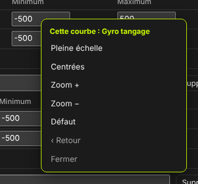
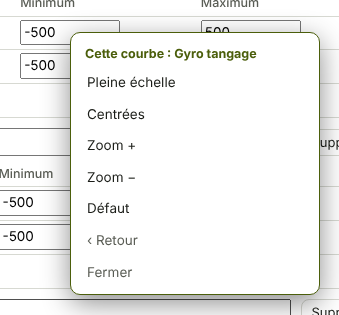
Menu d'un graphe
Sans ouvrir le dialogue : clic droit sur un graphe. Le menu court agit sur les courbes de ce graphe, et l'écran change tout de suite.
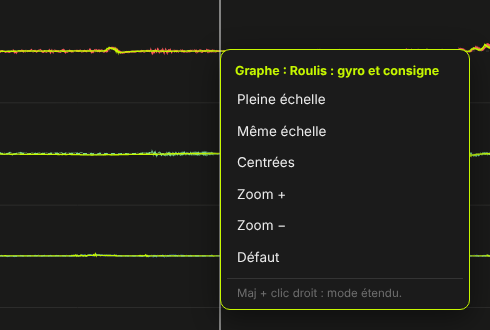
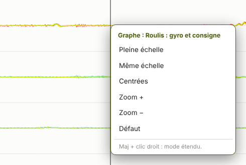
Le mode étendu
Tenir Maj pendant le clic droit : chaque action ouvre alors un panneau où l'on choisit les courbes (cases à cocher, toutes cochées au départ) et, selon l'action, une valeur. Dans chaque panneau : la ligne en capitales applique, « ‹ Retour » revient au menu, « Fermer » le ferme. Appliquer ou Annuler dans le dialogue ferment tout de suite le menu et le dialogue.
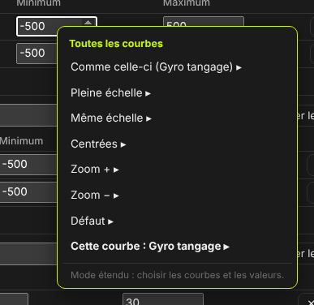
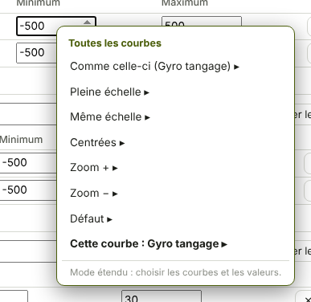
Comme celle-ci
Minimum et Maximum à saisir (au départ ceux de la courbe du clic), courbes à cocher, puis APPLIQUER CES MIN / MAX.
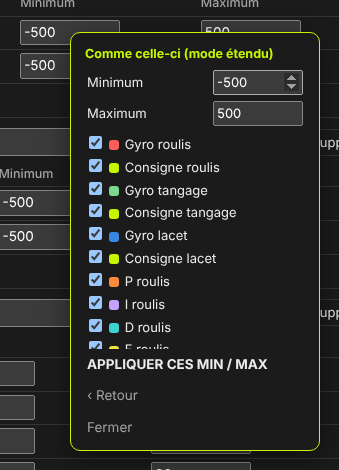
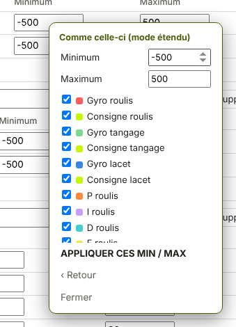
Pleine échelle
Courbes à cocher, puis la période où chercher les valeurs extrêmes :
- Sur tout le journal : tout le vol ;
- Sur la fenêtre affichée : seulement le temps visible à l'écran ;
- Entre les marqueurs (I / O) : entre les marqueurs posés avec I et O ; sans marqueurs, tout le vol.
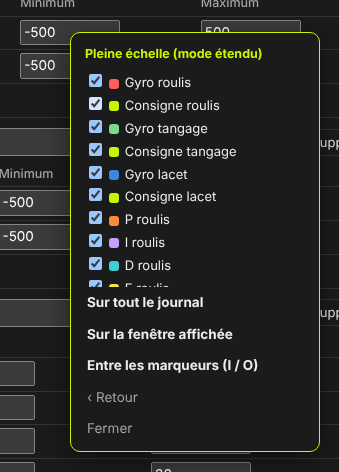
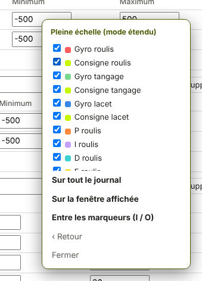
Même échelle
Courbes à cocher, puis METTRE À LA MÊME ÉCHELLE.
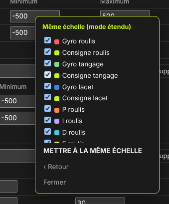
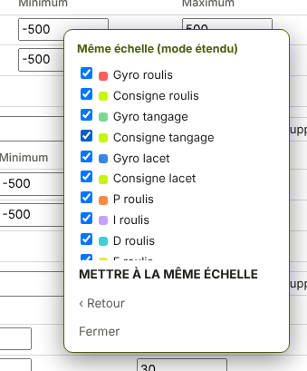
Centrées
Courbes à cocher, puis CENTRER SUR ZÉRO.
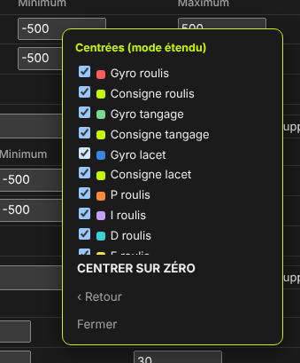
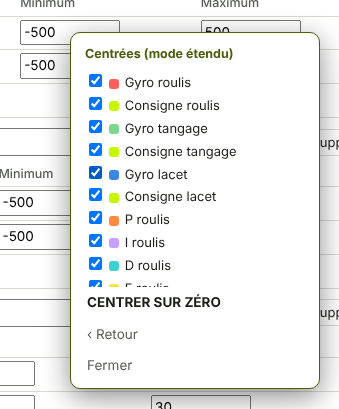
Zoom + et Zoom −
Pourcentage du zoom (15 % au départ), courbes à cocher, puis ZOOM + ou ZOOM −.
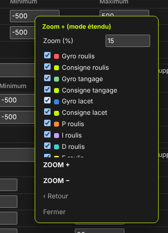
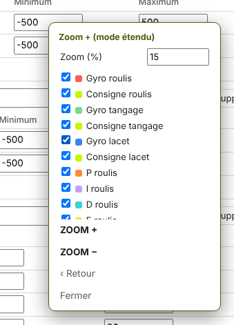
Défaut
Courbes à cocher, puis REMETTRE LES VALEURS PAR DÉFAUT.
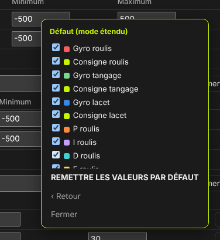
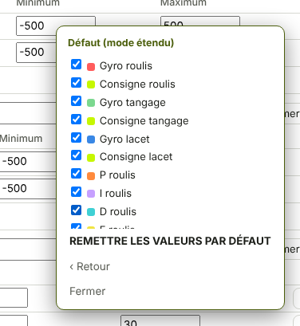
Une seule courbe
Dans « Cette courbe », le mode étendu ajoute à Pleine échelle les trois périodes (tout le journal, fenêtre affichée, entre les marqueurs), pour cette courbe seulement.
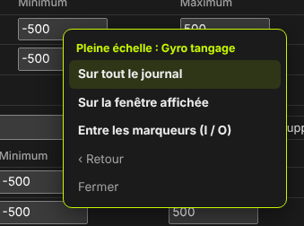
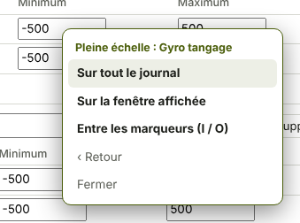
Exemples
- On connaît l'échelle voulue : la taper dans les cases d'une courbe, puis clic droit sur cette courbe et Comme celle-ci pour toutes les autres. Pour des échelles différentes selon les courbes : le panneau étendu « Comme celle-ci », courbes cochées à la main.
- On veut le détail d'un passage : poser I et O autour, Pleine échelle entre les marqueurs, puis Même échelle et Centrées pour aligner les courbes.


Espaces de travail
Un espace de travail garde les graphes, leurs courbes et toutes leurs échelles. Le dernier espace utilisé est retenu par le navigateur. Maj+W (ou le bouton « Espaces de travail ») ouvre le choix :
- Espace 1 : Réglage du PID (préréglé) : gyroscope et consigne des trois axes, PID du roulis, moteurs, gaz ;
- Espace 2 : Moteurs et batterie (préréglé) : gyroscope brut et filtré, vitesse et sortie des moteurs, tension et courant ;
- Mon espace : celui qu'on a enregistré avec « Enregistrer l'espace actuel ».
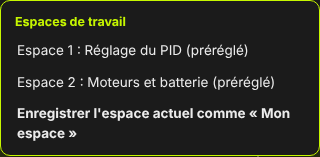
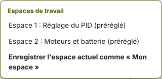
Clavier et souris
| Geste | Effet |
|---|---|
| Molette sur les courbes | Zoom sur le temps, autour de la souris |
| Glisser | Déplacer la fenêtre dans le temps |
| I / O | Marqueur de début / de fin à la position de la souris |
| Échap | Effacer les marqueurs, fermer le menu |
| Clic droit sur un graphe | Échelles des courbes de ce graphe |
| Maj + clic droit | Mode étendu |
| Double-clic sur une case Min / Max | Valeur par défaut |
| Maj+W | Espaces de travail |
| « Tout le vol » | Revoir le vol entier |